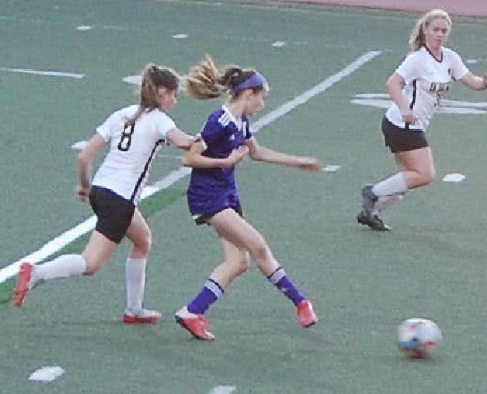

One of the extracurriculars I partook in over the duration of this school year was choir. I have been a member of the Piedmont Choirs for over 8 years, and it has brought me so many amazing opportunities, from performing in an opera when I was 10, to touring the globe. The image above is from our most recent choir tour to Denmark and Germany. Overall, choir has taught me so much about relationships, different cultures and genres of music. It has also brought me some of the best friends, people who I love and will value for a very long time.
Another extra curricular I pursued this year was soccer, both through my soccer club, as well as my highschool. Soccer is another activity that I have been a part of for many years, and I thoroughly enjoy it. The sport has also brought me many new connections, and has tought me how to work hard as well as work alongside other individuals as part of a team. During sophmore year, however, soccer wasn't the only sport I played. I also tried track for the first time, which was honestly one of the most physically demanding activities I have ever participated in.
Here is a collage depicting some of the main hobbies/extracurriculars I focused on over this past year.